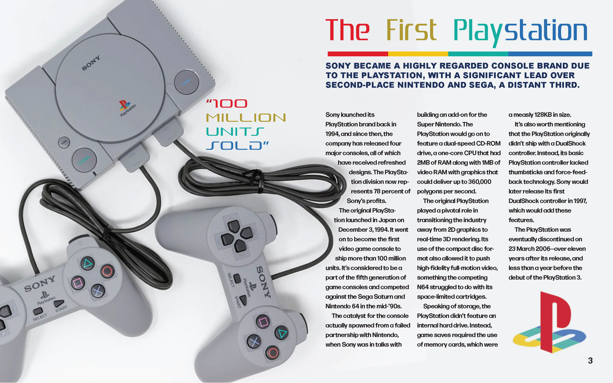
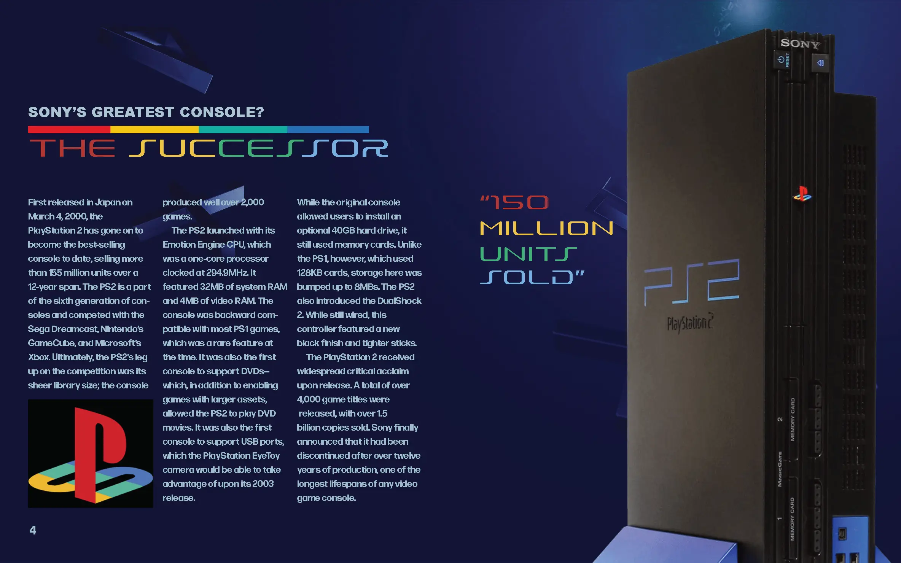
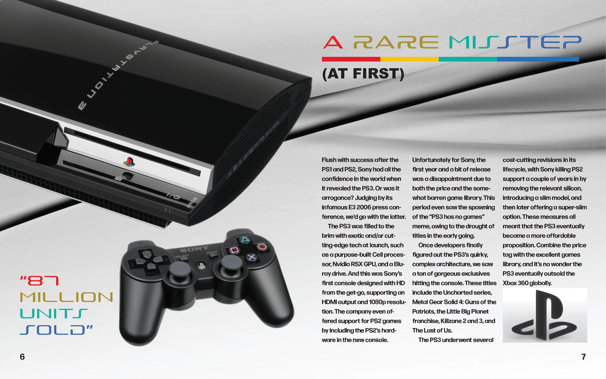
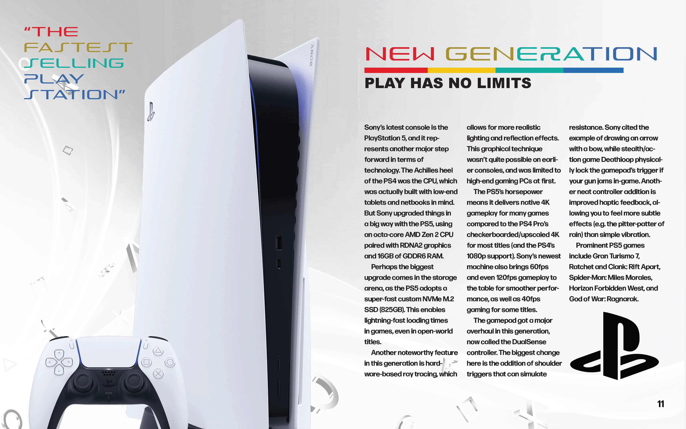

Print Design
Print Design
Project Brief
For this project, the brief was to design a 12-page brochure that ties typography, image, structure, and pacing together around one cohesive theme. I chose the PlayStation’s console history specifically because it gave me a built-in pacing structure, with five distinct console generations, each with its own visual identity to work with rather than one flat subject stretched across 12 pages.
I modeled the layout on tech catalogs and product manuals rather than a typical editorial spread, since that reference gave me a clear precedent for the two things the brochure needed most: a modular type hierarchy that could handle dense spec-style copy without feeling cluttered, and full-bleed photography that let each console generation feel distinct even while sharing the same underlying grid.
Final Design



